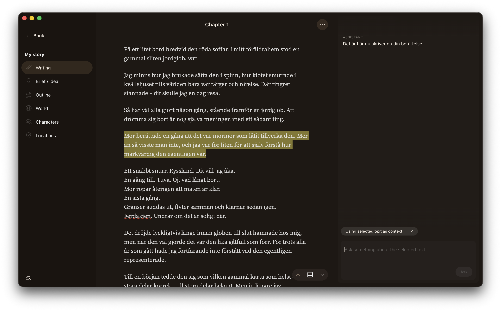

Distil – a writing environment for turning thought into prose

From thought to prose
Distil is a beautiful and simple prose editor with AI Assistance built in. But it's so much more than that. It doesn't write for you (that is your job) – but it helps you shape complex, half-formed ideas into clear, intentional storytelling. Distil gently assists you in applying process, structure and consistency where it matters, and stays out of the way where it doesn’t — it helps you go from uncertainty to finished prose, step by step.
Your voice comes first
You begin by defining your voice, creative values, and intentions in an Author Manifest. After that everything will be guided by your manifest — not by generic defaults.
As you develop a story brief, an outline and a world description for your project, the AI assistant works within the boundaries you set. It understands what matters to you, what you're trying to create and helps you stay true to it.
Distil does not generate ideas on your behalf or decide what should be written. But it helps you clarify, develop, and test your own thinking.
Write with confidence
Keep track of characters, places, and world details as your work grows. Distil helps you notice inconsistencies, forgotten details, and unintended shifts.
Distil even offers structured guides for difficult creative moments — from clarifying your author voice to exploring characters or planning a story.
These guided steps help you think more clearly, without taking decisions away from you. You always choose what stays, what changes, and what gets written.
Download Distil
Version 0.3.2
Download for macOSmacOS 10.13 or later required